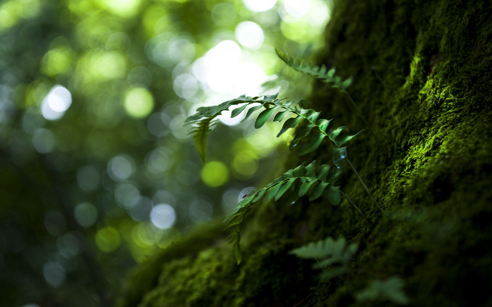

Fotografia de Paisagens
Capturar a beleza da natureza por meio de uma lente. Um olhar único sobre o mundo ao nosso redor.
O Poder da Fotografia de Paisagens
A fotografia de paisagens nos permite congelar momentos naturais e magníficos em uma única imagem, trazendo um sentimento de paz e admiração.